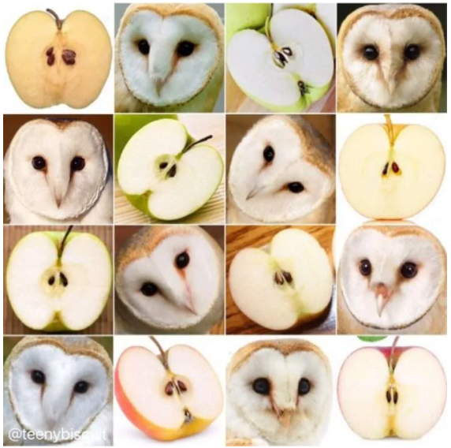

Machine Learning
Models of AI
What Is An AI Model?
AI or Artificial Intelligence is a subfield within computer science associated with constructing machines that can simulate human intelligence.
An AI model is a program or algorithm that utilizes a set of data that enables it to recognize certain patterns. This allows it to reach a conclusion or make a prediction when provided with sufficient information.
This is especially useful for solving complex problems using huge amounts of data with high accuracy and minimum costs.
Machine Learning is a subset within AI associated with providing machines the ability to learn from experience without the need to be programmed explicitly, so in a nutshell, ML or machine learning is a part of AI.
Upper Image: Barn owl or apple? Image recognition tasks can be equally challenging for AI models and humans. – Source @teenybiscuit